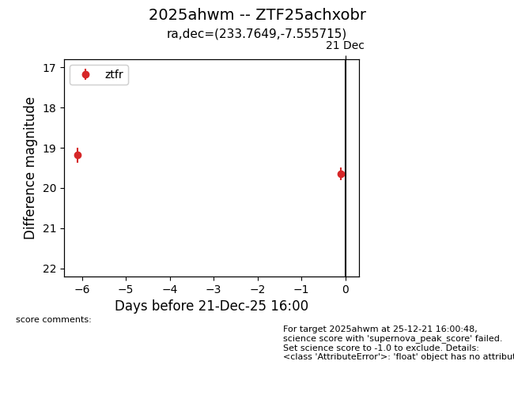
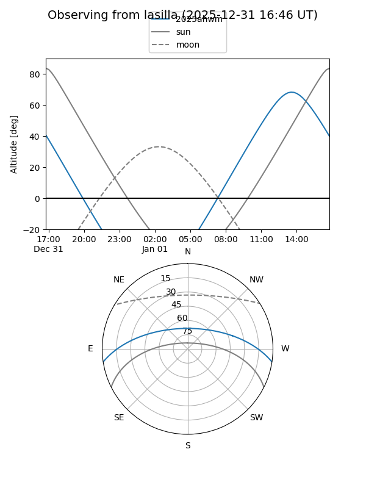
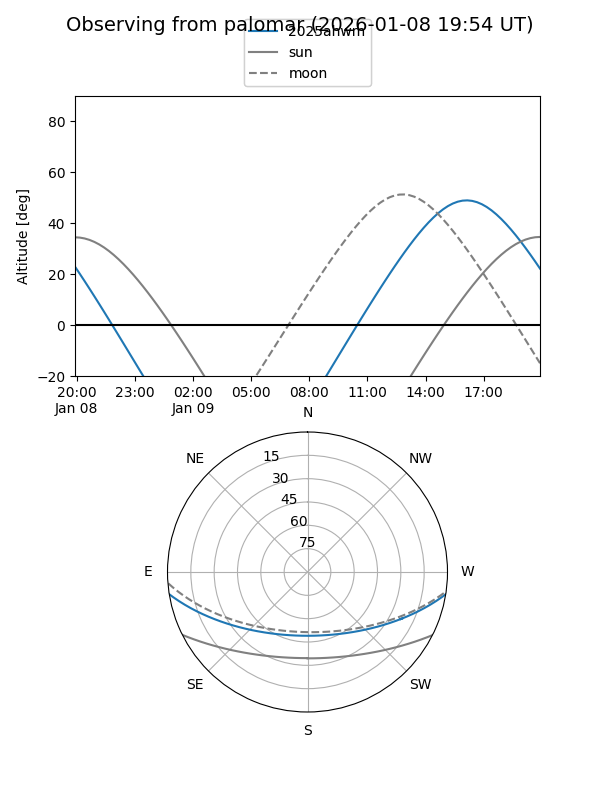

2025ahwm
Target 2025ahwm at 2026-01-09 12:49
Aliases and brokers:
FINK: link
Lasair: link
ALeRCE: link
TNS: link
YSE: link
alt names
ZTF25achxobr (ztf,fink_ztf)
2025ahwm (tns,yse)
Coordinates:
equatorial (ra, dec) = 233.7649,-7.55572
equatorial (HMS+DMS) = 15:35:03.58,-07:33:20.57
galactic (l, b) = (357.6876,+37.36190)
Flags:
Photometry:
last ztfr=19.64
2 ztfr detections
Lightcurve

Visibility


Additional plots